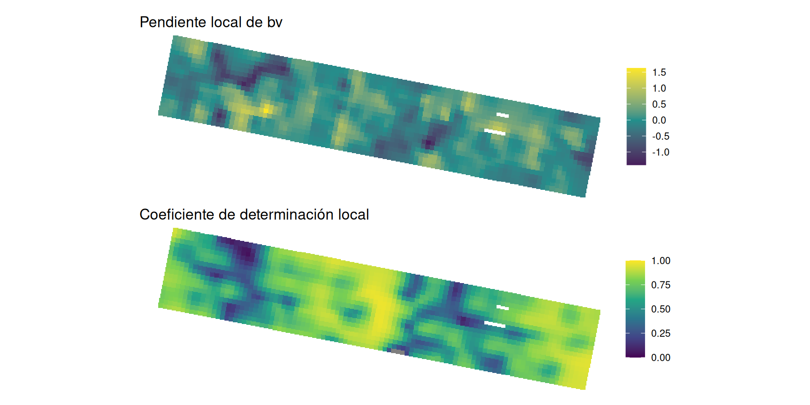
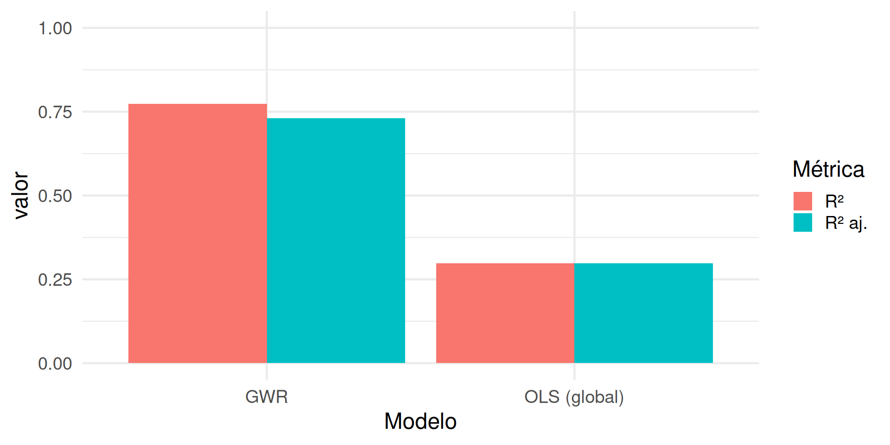
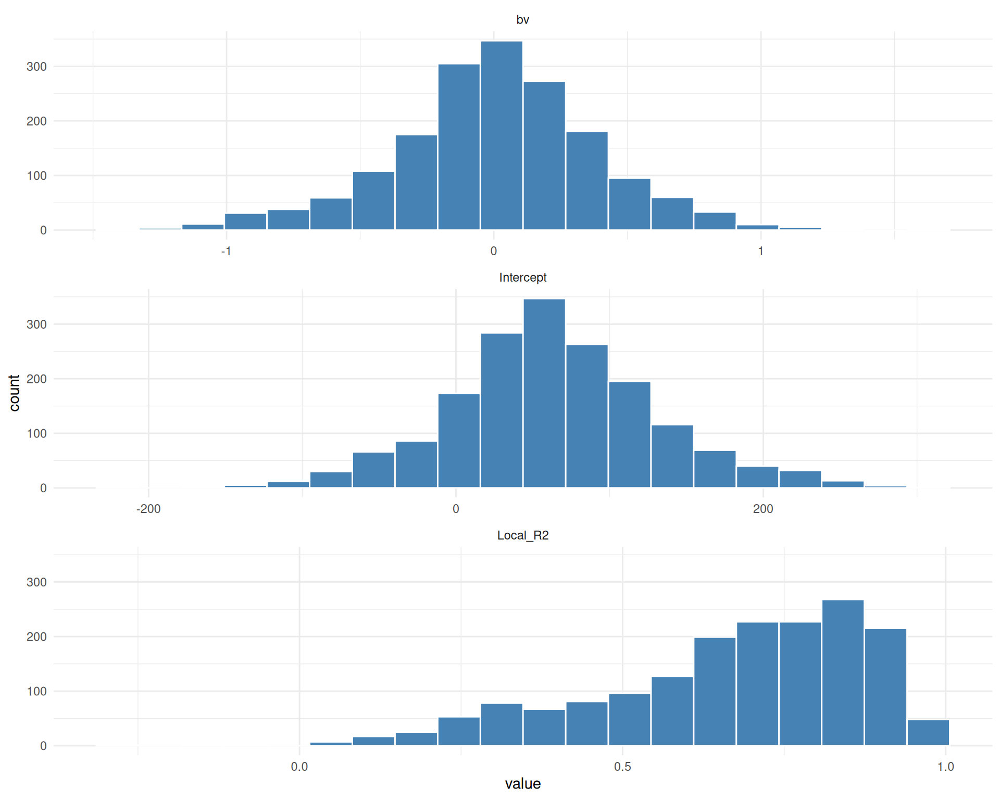
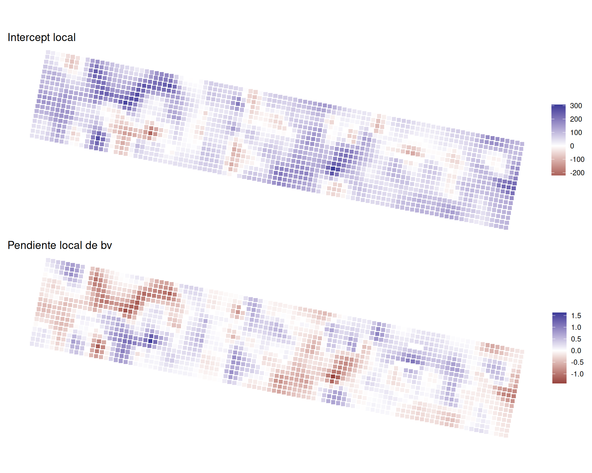
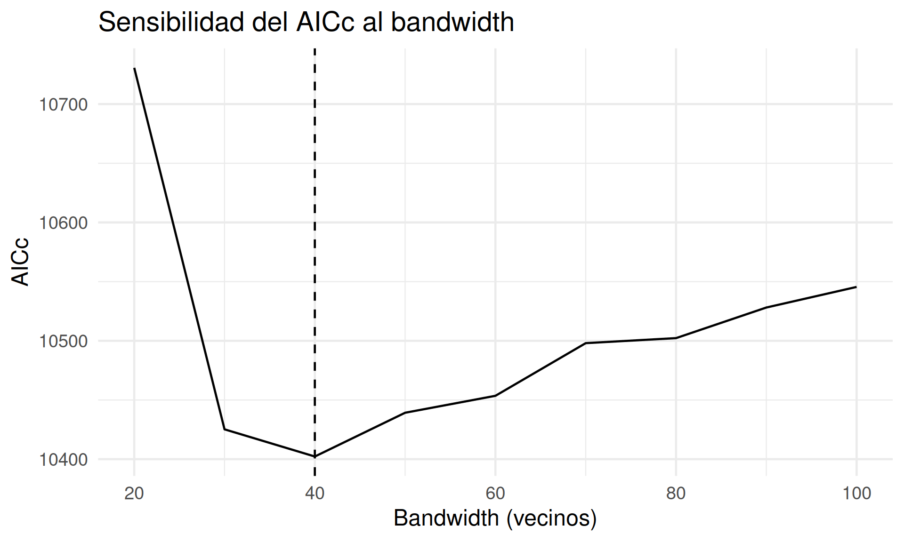

Diagnóstico e inferencia en GWR
Regresión geográfica ponderada · Día 2
Hoja de ruta
- Repaso: reajustamos el GWR del Día 1
- Explorando alternativas de kernel y bandwidth
- Diagnóstico: residuos, variograma, bondad de ajuste
- Interpretación de coeficientes locales
- Grados de libertad efectivos (ENP) y significancia local
- Problemas de GWR
- Multiplicidad de hipótesis
- ¿Vale la pena GWR?
- Incertidumbre del bandwidth
- Multicolinealidad (planteo, no aplica todavía)
- Cierre
Repaso: el ajuste del Día 1
Reajustamos el modelo
Retomamos el mismo dataset y el mismo ajuste GWR del Día 1.
# Lectura y preparación datos
data(lasrosas.corn)
lr1999 <- lasrosas.corn |>
filter(year == 1999) |>
st_as_sf(coords = c("long", "lat")) |>
st_set_crs(4326) |>
st_transform(32720)
# Configuración y estimación bandwidth
approach <- "AICc" # otra opción CV
kernel <- "bisquare" # otros: exponential, gaussian, etc
ad <- TRUE # FALSE para fixed
bw_bv <- bw.gwr(
yield ~ bv, data = lr1999,
approach = approach, kernel = kernel,
adaptive = ad
) Take a cup of tea and have a break, it will take a few minutes.
-----A kind suggestion from GWmodel development group
Adaptive bandwidth (number of nearest neighbours): 1081 AICc value: 11405.18
Adaptive bandwidth (number of nearest neighbours): 676 AICc value: 10956.08
Adaptive bandwidth (number of nearest neighbours): 424 AICc value: 10764.33
Adaptive bandwidth (number of nearest neighbours): 270 AICc value: 10684.13
Adaptive bandwidth (number of nearest neighbours): 173 AICc value: 10634.01
Adaptive bandwidth (number of nearest neighbours): 115 AICc value: 10573.19
Adaptive bandwidth (number of nearest neighbours): 77 AICc value: 10497.62
Adaptive bandwidth (number of nearest neighbours): 55 AICc value: 10442.92
Adaptive bandwidth (number of nearest neighbours): 40 AICc value: 10402.24
Adaptive bandwidth (number of nearest neighbours): 32 AICc value: 10423.23
Adaptive bandwidth (number of nearest neighbours): 46 AICc value: 10434.19
Adaptive bandwidth (number of nearest neighbours): 37 AICc value: 10412.66
Adaptive bandwidth (number of nearest neighbours): 42 AICc value: 10411.3
Adaptive bandwidth (number of nearest neighbours): 38 AICc value: 10404.98
Adaptive bandwidth (number of nearest neighbours): 40 AICc value: 10402.24 El bandwidth óptimo es 40 vecinos.
***********************************************************************
* Package GWmodel *
***********************************************************************
Program starts at: 2026-10-09 16:49:00.788884
Call:
gwr.basic(formula = yield ~ bv, data = lr1999, bw = bw_bv, kernel = kernel,
adaptive = ad)
Dependent (y) variable: yield
Independent variables: bv
Number of data points: 1738
***********************************************************************
* Results of Global Regression *
***********************************************************************
Call:
lm(formula = formula, data = data)
Residuals:
Min 1Q Median 3Q Max
-26.6149 -4.8232 0.0283 4.6619 27.8223
Coefficients:
Estimate Std. Error t value Pr(>|t|)
(Intercept) 166.1340 3.7481 44.33 <2e-16 ***
bv -0.5833 0.0215 -27.13 <2e-16 ***
---Significance stars
Signif. codes: 0 '***' 0.001 '**' 0.01 '*' 0.05 '.' 0.1 ' ' 1
Residual standard error: 7.428 on 1736 degrees of freedom
Multiple R-squared: 0.2978
Adjusted R-squared: 0.2974
F-statistic: 736.1 on 1 and 1736 DF, p-value: < 2.2e-16
***Extra Diagnostic information
Residual sum of squares: 95773.17
Sigma(hat): 7.427576
AIC: 11906.3
AICc: 11906.32
BIC: 10207.07
***********************************************************************
* Results of Geographically Weighted Regression *
***********************************************************************
*********************Model calibration information*********************
Kernel function: bisquare
Adaptive bandwidth: 40 (number of nearest neighbours)
Regression points: the same locations as observations are used.
Distance metric: Euclidean distance metric is used.
****************Summary of GWR coefficient estimates:******************
Min. 1st Qu. Median 3rd Qu. Max.
Intercept -220.119441 22.089946 59.883374 103.010940 307.4234
bv -1.407641 -0.201978 0.028229 0.234599 1.6264
************************Diagnostic information*************************
Number of data points: 1738
Effective number of parameters (2trace(S) - trace(S'S)): 276.6506
Effective degrees of freedom (n-2trace(S) + trace(S'S)): 1461.349
AICc (GWR book, Fotheringham, et al. 2002, p. 61, eq 2.33): 10402.24
AIC (GWR book, Fotheringham, et al. 2002,GWR p. 96, eq. 4.22): 10140.84
BIC (GWR book, Fotheringham, et al. 2002,GWR p. 61, eq. 2.34): 9721.89
Residual sum of squares: 30943.38
R-square value: 0.7731151
Adjusted R-square value: 0.7301337
***********************************************************************
Program stops at: 2026-10-09 16:49:01.283156 Rows: 1,738
Columns: 13
$ Intercept <dbl> 40.2710181, 43.0065700, 49.8453616, 64.2816986, 86.55063…
$ bv <dbl> 0.19671512, 0.18097484, 0.14138114, 0.05687493, -0.07494…
$ y <dbl> 72.14, 73.79, 77.25, 76.35, 75.55, 70.24, 76.17, 69.17, …
$ yhat <dbl> 72.25690, 73.86097, 73.65253, 74.33036, 73.69985, 73.379…
$ residual <dbl> -0.11689688, -0.07097005, 3.59746852, 2.01963934, 1.8501…
$ CV_Score <dbl> 0, 0, 0, 0, 0, 0, 0, 0, 0, 0, 0, 0, 0, 0, 0, 0, 0, 0, 0,…
$ Stud_residual <dbl> -0.03135450, -0.01625733, 0.83655909, 0.52135072, 0.4241…
$ Intercept_SE <dbl> 38.63512, 37.96984, 39.46250, 42.77210, 51.41071, 64.950…
$ bv_SE <dbl> 0.2271130, 0.2227701, 0.2310590, 0.2497762, 0.2989196, 0…
$ Intercept_TV <dbl> 1.04234216, 1.13265068, 1.26310707, 1.50288850, 1.683513…
$ bv_TV <dbl> 0.86615543, 0.81238377, 0.61188335, 0.22770356, -0.25073…
$ Local_R2 <dbl> 0.8094432, 0.8321277, 0.8527897, 0.8682821, 0.8710910, 0…
$ geometry <POINT [m]> POINT (420747.3 6342724), POINT (420753.9 6342723)…# Coeficientes locales y R²
p_b1 <- ggplot(gwr_bv$SDF) +
aes(color = bv) +
geom_sf(size = 2, shape = "square") +
scale_color_gradient2(low = "#440154", mid = "#21908C", high = "#FDE725", midpoint = 0) +
labs(title = "Pendiente local de bv", color = NULL) +
theme_void()
p_r2 <- ggplot(gwr_bv$SDF) +
aes(color = Local_R2) +
geom_sf(size = 2, shape = "square") +
scale_color_viridis_c(limits = c(0, 1)) +
labs(title = "Coeficiente de determinación local", color = NULL) +
theme_void()
p_b1 / p_r2
Explorando opciones de kernel
¿Por qué bisquare y no gaussian o exponential?
El mismo criterio que usamos para elegir el bandwidth (AICc) también sirve para comparar familias de kernel: se repite la búsqueda de bandwidth para cada combinación y se compara el AICc del ajuste final.
grid_kernel <- expand_grid(
kernel = c("bisquare", "gaussian", "exponential"),
adaptive = c(TRUE, FALSE)
) |>
mutate(
bw = map2_dbl(kernel, adaptive, \(k, a) {
bw.gwr(
yield ~ bv, data = lr1999,
approach = "AICc", kernel = k, adaptive = a
)
}),
AICc = pmap_dbl(list(kernel, adaptive, bw), \(k, a, b) {
gwr.basic(
yield ~ bv, data = lr1999,
bw = b, kernel = k, adaptive = a
) |> pluck("GW.diagnostic", "AICc")
})
) |>
arrange(AICc)Puede demorar: son 6 ajustes
# A tibble: 6 × 4
kernel adaptive bw AICc
<chr> <lgl> <dbl> <dbl>
1 bisquare TRUE 40 10402.
2 bisquare FALSE 24.4 10438.
3 gaussian FALSE 10.1 10469.
4 gaussian TRUE 17 10534.
5 exponential FALSE 9.7 10548.
6 exponential TRUE 17 10592.- Kernel bisquare + adaptativo con 40 vecinos es la combinación ganadora.
Diagnóstico
Residuos locales
¿Cómo se distribuyen los residuos del modelo? ¿Tienen estructura espacial?
Bondad de ajuste (R²)
¿Cuánta varianza explica cada modelo?
\[ R^2 = 1 - \dfrac{RSS}{TSS} = 1 - \dfrac{\sum_{i=1}^{m} (y_i - \hat{y}_i)^2}{\sum_{i=1}^{m} (y_i - \bar{y})^2} \]
expand_grid(
Modelo = c("OLS (global)", "GWR"),
Métrica = c("R²", "R² aj.")
) |>
mutate(
valor = c(
summary(gwr_bv$lm)$r.squared,
summary(gwr_bv$lm)$adj.r.squared,
gwr_bv$GW.diagnostic$gw.R2,
gwr_bv$GW.diagnostic$gwR2.adj
)
) |>
ggplot() +
aes(x = Modelo, y = valor, fill = Métrica) +
geom_col(position = "dodge") +
lims(y = c(0,1))
El R² de GWR siempre va a ser mayor (más parámetros efectivos), R² aj no alcanza a penalizar
¿Cómo se distribuye la bondad de ajuste de los \(m\) modelos locales?
R² local
\[ R_i^2 = 1 - \dfrac{RSS_i}{TSS_i} = 1 - \dfrac{\sum_{i'=1}^{m} w_{ii'} (y_{i'} - \hat{y}_{i'})^2}{\sum_{i'=1}^{m} w_{ii'} (y_{i'} - \bar{y})^2} \]
El R² local no es constante: hay zonas del campo donde
bvexplica mucho más del rendimiento que en otras.Esto es información que un único R² global (0.30) no puede mostrar.
¿Cuán complejo es el modelo GWR?
GWR ajusta una regresión ponderada distinta en cada uno de los \(m\) puntos de calibración.
El modelo tiene solo p parámetros nominales (\(p = k + 1 = 2\), intercepto +
bv)Como cada observación participa en varias regresiones locales, quedan menos grados de libertad que en el modelo global: \(edf < m - p\).
Número efectivo de parámetros (ENP)
Determina la complejidad real, se calcula a partir de la matriz hat \(\mathbf{S}\) que mapea \(\mathbf{y}\) a \(\hat{\mathbf{y}}\).
\[ ENP = 2\,\text{tr}(\mathbf{S}) - \text{tr}(\mathbf{S}^T\mathbf{S}) \] La complejidad está en función del \(bw\), a menor \(bw\) mayor \(ENP\), mayor complejidad.
AICc: ¿el modelo local justifica la complejidad?
OLS-AICc
\[ \small AICc = 2m\ln(\hat\sigma) + m\ln(2\pi) + m \left\{ \dfrac{m + p}{ m - 2 - p } \right\} \]
Penaliza por tamaño de muestra (\(m\)), se anula cuando \(m \gg p\).
No distingue si es modelo local o global.
GWR-AICc
\[ \small AICc(bw) = 2m\ln(\hat\sigma) + m\ln(2\pi) + m \left\{ \dfrac{m + \text{tr}(\mathbf{S})}{ m - 2 - \text{tr}(\mathbf{S}) } \right\} \]
\(m\) número de puntos, \(\hat\sigma\) desvío estándar estimado del error y \(\text{tr}(\mathbf{S})\) traza de la hat matrix
- \(\text{tr}(\mathbf{S})\) es función del \(bw\) y mide la complejidad que penaliza el AICc (en OLS coincide con \(ENP = p\))
- Si \(bw \rightarrow \infty\), \(ENP = p\)
Regla práctica
Si \(\Delta\) AICc > ~3, el modelo GWR (globalmente) es mejor que el modelo global, pese a su mayor complejidad.
Interpretación de coeficientes locales
¿Dónde están los coeficientes locales?
Rows: 1,738
Columns: 13
$ Intercept <dbl> 40.2710181, 43.0065700, 49.8453616, 64.2816986, 86.55063…
$ bv <dbl> 0.19671512, 0.18097484, 0.14138114, 0.05687493, -0.07494…
$ y <dbl> 72.14, 73.79, 77.25, 76.35, 75.55, 70.24, 76.17, 69.17, …
$ yhat <dbl> 72.25690, 73.86097, 73.65253, 74.33036, 73.69985, 73.379…
$ residual <dbl> -0.11689688, -0.07097005, 3.59746852, 2.01963934, 1.8501…
$ CV_Score <dbl> 0, 0, 0, 0, 0, 0, 0, 0, 0, 0, 0, 0, 0, 0, 0, 0, 0, 0, 0,…
$ Stud_residual <dbl> -0.03135450, -0.01625733, 0.83655909, 0.52135072, 0.4241…
$ Intercept_SE <dbl> 38.63512, 37.96984, 39.46250, 42.77210, 51.41071, 64.950…
$ bv_SE <dbl> 0.2271130, 0.2227701, 0.2310590, 0.2497762, 0.2989196, 0…
$ Intercept_TV <dbl> 1.04234216, 1.13265068, 1.26310707, 1.50288850, 1.683513…
$ bv_TV <dbl> 0.86615543, 0.81238377, 0.61188335, 0.22770356, -0.25073…
$ Local_R2 <dbl> 0.8094432, 0.8321277, 0.8527897, 0.8682821, 0.8710910, 0…
$ geometry <POINT [m]> POINT (420747.3 6342724), POINT (420753.9 6342723)…SDFtiene 1738 filas (una por punto de calibración) y 12 columnas (sin contargeometry).Variables:
Intercept,bv: coeficientes locales \(\beta_0(s_i)\), \(\beta_1(s_i)\)y,yhat: valor observado y ajustado localmenteresidual:y - yhatCV_Score: residuo de validación cruzadaStud_residual: residuo estudentizado*_SE: error estándar de cada coeficiente local*_TV: estadístico t de cada coeficiente localLocal_R2: bondad de ajuste local
¿Cómo se distribuyen?
# Distribución de coeficientes locales y R²
gwr_bv$SDF |>
st_drop_geometry() |>
select(Intercept, bv, Local_R2) |>
pivot_longer(everything()) |>
ggplot() +
aes(x = value) +
geom_histogram(
bins = 20,
fill = "steelblue",
color = "white"
) +
facet_wrap(
~name, ncol = 1,
scales = "free_x"
) +
theme_minimal()
# Mapas de coeficientes locales
p_base <- ggplot(gwr_bv$SDF) +
geom_sf(
size = 2,
shape = "square"
) +
scale_color_gradient2(midpoint = 0) +
theme_void()
p_b0 <- p_base +
aes(color = Intercept) +
labs(
title = "Intercept local",
color = NULL
)
p_b1 <- p_base +
aes(color = bv) +
labs(
title = "Pendiente local de bv",
color = NULL
)
p_b0 / p_b1
Significancia local
Los t-valores (_TV) permiten evaluar significancia punto por punto. El valor crítico usa los grados de libertad efectivos (edf = m - enp):
Problemas de GWR
Problema 1: multiplicidad de hipótesis dependientes
Dos problemas en uno
El error Tipo I se infla al testear significancia de
bvenmpuntos de calibración (mtests simultáneos)Esos tests no son independientes, están relacionados por el vecindario.
Dos soluciones en una
Fotheringham-Byrne (2009) y da Silva-Fotheringham (2016) proponen ajustar los valores p considerando la dependencia según vecindario.
Fotheringham-Byrne (2009)
\[ \alpha^* = \dfrac{\alpha}{ 1 + ENP - \dfrac{ENP}{mp}} \] - \(mp\): número de tests (\(m\) puntos \(\times\) \(p\) parámetros)
- Como Bonferroni (family-wise error rate) pero agrega dependencia via \(ENP\)
da Silva-Fotheringham (2016)
\[ \alpha^* = \dfrac{\alpha}{ENP/p} \]
\(ENP / p\) representa el solapamiento de tests.
a mayor bandwidth, \(ENP \rightarrow p\) y \(\alpha^* = \alpha\), los test de GWR equivalen al modelo global.
no implementado en
gwr.t.adjust()
Aplicando la corrección
p <- gwr_bv$lm$rank # Parámetros nominales
enp <- gwr_bv$GW.diagnostic$enp # Parámetros efectivos
gwr_bv$SDF <- gwr_bv$SDF |>
mutate(
# Valores p sin ajustar
across(
.cols = ends_with("_TV"),
.fn = \(x) 2*pt(abs(x), df = gwr_edf, lower.tail = F),
.names = "{.col}_p"
),
# Fotheringham-Byrne, 2009
across(
.cols = ends_with("_p"),
.fns = \(x) pmin(1, x * (1 + enp - enp / (m * p))),
.names = "{col}_fb"
),
# da Silva-Fotheringham, 2016
across(
.cols = ends_with("_p"),
.fns = \(x) pmin(1, x * (enp/p)),
.names = "{col}_dsf"
)
) |>
rename_with(\(x) str_replace(x, "_TV_p", "_p"), everything())
Problema 2: ¿vale la pena GWR?
¿La variación de los coeficientes locales es real o es ruido de muestreo?
El AICc sirve para comparar globalmente si un modelo con coeficientes locales es “mejor” que uno global.
No informa sobre la significancia estadística de los patrones espaciales de cada coeficiente.
Test de variabilidad espacial Monte Carlo
- Manteniendo la especificación del modelo constante, se permutan las coordenadas y se recalibra el modelo \(N\) veces.
- Para cada realización se calcula la dispersión de los coeficientes y se lo compara con los datos originales.
- Se calcula un pseudo valor p que representa el % de realizaciones con igual o mayor variabilidad que la observada.
Implementado en gwr.montecarlo()
Problema 3: incertidumbre del bandwidth
¿Qué confianza hay en torno al bandwidth optimizado?
El bandwidth se elige optimizando AICc o CV.
bw.gwr()solo devuelve el óptimo, no la curva completa: hay que armarla a mano.¿Qué tan chato o agudo es el mínimo de la curva AICc alrededor del bandwidth elegido?
# Grilla bandwidth
grilla_bw <- tibble(
bw = seq(20, 100, by = 10),
AICc = map_dbl(bw, \(bw) {
gwr.basic(
yield ~ bv, data = lr1999,
bw = bw, kernel = kernel, adaptive = ad
) |> pluck("GW.diagnostic", "AICc")
}, .progress = T)
)
# Plot AICc vs bandwidth
ggplot(grilla_bw) +
aes(x = bw, y = AICc) +
geom_line() +
# geom_point() +
geom_vline(xintercept = bw_bv, linetype = "dashed") +
labs(
title = "Sensibilidad del AICc al bandwidth",
x = "Bandwidth (vecinos)",
y = "AICc"
)
Problema 4: multicolinealidad
Correlación entre predictores puede afectar los coeficientes locales
Al igual que en un modelo global, en modelos con más de un predictor, hay que chequear colinealidad en los modelos locales.
La ventana local de vecinos reduce el tamaño de muestra efectivo de cada ajuste: dos predictores pueden aparecer correlacionados por azar aunque no lo estén globalmente
El problema, en modelos con más de un predictor
gwr.collin.diagno() implementa varios indicadores locales, VIF (variance inflation factor), local_CN (condition numbers), VDP (variance-decomposition)
Cierre
Repaso
El
SDFdegwr.basic()trae un coeficiente, error estándar y t-valor por variable y por punto de calibración: eso se mapea e interpreta.El AICc de GWR compara contra OLS usando grados de libertad efectivos (ENP), no el número nominal de parámetros.
La significancia local hay que ajustarla por multiplicidad y por dependencia entre los tests.
Multiplicidad de tests, si la variación es real (test de permutación Monte Carlo), la incertidumbre del bandwidth y la multicolinealidad son los 4 problemas a revisar antes de confiar en un GWR.
¿Bandwidth único?
GWR usa un único bandwidth para todas las variables del modelo. ¿Qué pasa si distintos predictores operan a escalas espaciales distintas (uno muy local, como suelo, y otro muy regional, como clima)?